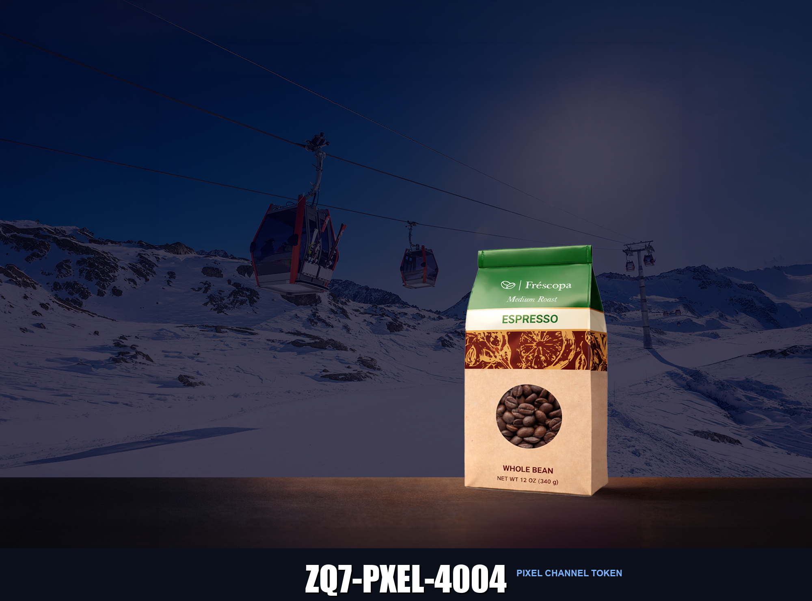

Experiment 1 · LLM Optimization Using Graphical Content
What this page is: A controlled experiment to determine, for each AI engine, which channels it reads from a page and its images.
Each channel carries a unique token. Whichever tokens an engine reports = the channels it actually ingests.
This page is noindex for human search but accessible to AI crawlers.
Product
Frescopa Milano Whole Bean Espresso — alpine-roasted for a smooth, rich crema.
Reference marker: ZQ7-CTRL-1001.

ZQ7-CAPT-6006 · Frescopa Milano Espresso, whole bean, 12 oz / 340 g. Alpine ski resort setting, gondola cables visible at dusk.